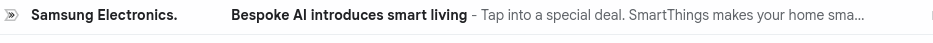
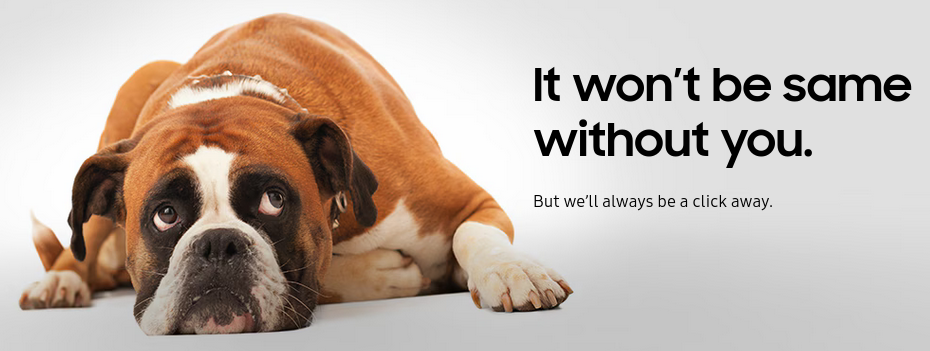

Only Samsung loves me back!
And here it was again, in my Spam list, only after three days of unsubscribing from 'all marketing Email communications from Samsung'.
I would have counted it as a mistake if it were the first time. Or second time. Or even the third time. But I had unsubscribed, about five times, in the past three months.
It's not that I am oblivious to their yearning for me. Since they really guilt trip me into staying with them every single time. Here's how the conversation goes:
"Have you thought this through?"
I definitely have.
"Oh, why don't you enter a captcha then?"
Just did.
"Furrget us Not. Enter the OTP we just sent you via email."
Oh. Sure, OTPs are indeed necessary, what if some jealous vigilante uses my email to break us up.
"Now you either click on small 'Yes' button or that huge 'No, I do not want to opt out' button to the right."
Bit confusing, but done.
"It won’t be same without you. Thank you for choosing us and we respect your privacy choices."
.......
In their defense, they did promise me that 'It won’t be same without you'. And maybe, just maybe, that promise stems from a place of pain and longing, a longing so dire, that they chime back again in my inbox, after a few days.
As famously said, 'Be so great persistent that they can't ignore you'. Someone putting in so much effort, just to be with you, despite you ignoring them, blocking them, explicitly marking them as spam every time. Who does that anymore these days. If that's not love, I don't know what is.
P.S.: As I opened one of their older mails while writing this piece, I got another one. Long live Tracking pixels.